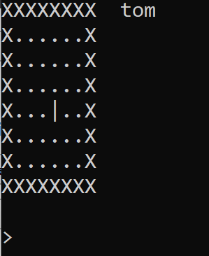
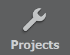

2811 / User Interfaces
Tom Kelly (MS Teams, scstke@leeds.ac.uk)
Updates:
- v2: moved zip file on onedrive
Coursework 1: Cave Plus Plus
Date set: 13.10.20
Date due: 27.10.20
Weighting: 15%
Goals of this CW:
- Test your understanding of basic C++,
- object-oriented programming in C++,
- arrays, pointers, and references.
- Introduce a basic terminal user interface to a block-world
Getting started:
- Extract the project to a location on your computer
- Go "File" → "Open File or Project" and select the .pro file in the zip
- Select the Qt Kit you wish to use (the default is usually correct) and click "Configure Project".
- Click the run button to start the program. You may need to set the project to "run in terminal".
- You should see something like this:

- the program will show you a world which is an array of characters
- you will be presented with a prompt. Type "move west" followed by enter. observe the result.
- try these commands:
- "move north"
- "move east" - notice this fails!
- "place coin" - notice that if the location has any contents (which isn't a Rock) it is shown ~
- "place mushroom" - notice that if the location has any contents it is shown as an underscore _ or L
- "exit"
- If you run the main function with a single command line argument "test", it will run the test function. This is an example of the function I will use to grade your code (but perhaps not the final function).
- You can set the command line arguments in Creator by clicking "Projects" → and then editing "Command line arguments" on the right.
- The test function will also write out a .patch file that you must submit via Minerva before the deadline above.
- Read the code to understand how the program works.
- Use the debugger and breakpoints to help you do this.
- You will have to look up library functions online.
Your tasks:
Make the following changes to the program. Do not edit the files marked "Do not change this file" in the comments at the top - you may have to click + to show all comments. You may use the std library (but no others) to assist you if necessary. If you get stuck on one part, continue to the others:
- Fix the code so that the move command will accept "move east" and "move south" and move tom appropriately;
(2 marks)
- Currently the system only creates a small (8x8) Cave. Edit the constructor to cave so that multiple sizes can be constructed. If you set the "Command line arguments" in your IDE to a string such as "12 16" it will create a cave of a different size.
(2 marks)
- remove the code which throws a logic_error if the size is not 8x8 in the Cave constructor
- edit the constructor to create an array of locations based on the sizes given
- remember to add Rocks around the edge of the cave
- The Cave destructor is currently broken - it does not return all the memory allocated by new statements the Cave constructor. Fix this.
(2 marks)
- The Cave and Location classes do not have a copy constructor or a copy assignment operator defined. Implement them, creating a deep copy of the cave each time.
- A deep copy shares no variables or memory with the original
- All dynamically allocated variables will have to be deep copied
- If those variables contain dynamically allocated variables, they will also need to be copied.
- To copy Cave you might have to write and use a copy constructor in Location.
- To deep copy a vector of pointers, you will have to deep copy each element of the vector.
(2 marks)
- Create the "throw <object>" command:
- Add a new command, "throw", which works like "place", but takes another argument which specifies the direction (north, south, east, or west). The object is placed 1 location away from tom in the given direction. If the location where the object is thrown is blocking (Location::isBlocking()), the object shouldn't be placed. For example, to throw a "coin" one step "north" you would type:
"throw coin north"
(2 marks)
- Add the placeable object "bomb" and a command "explode" which takes no arguments, and causes a chain reaction through contiguous bombs.
- Allow us to place a new type of Thing called "bomb". This type of thing does not block tom, and can be placed. For example, "place bomb" positions a bomb at tom's current location.
- "explode" causes all bombs at locations around or under tom to explode (north, south, east, west of Tom, and the location of tom).
- an exploding bomb destroys all objects (including Rocks, but not including Tom) in the same Location.
- all adjacent bombs (to the north, south, east, and west) also explode in the chain reaction - this continues until no more bombs are adjacent.
- you may wish to use std::set to keep track of the exploding Locations.
(5 marks)
(total 15 marks)
To Submit:
- Ensure your program writes no debugging information to cout or cerr
- As above, run the test script to generate a single patch file of all your work
- This will create a username.patch file in your project directory
- Check the contents of the patch file to ensure all your source code is there, and contains the outputs of the tests.
- Submit username.patch using Minerva.
- Your program will be graded automatically using a script which is similar, but not identical, to test.cpp